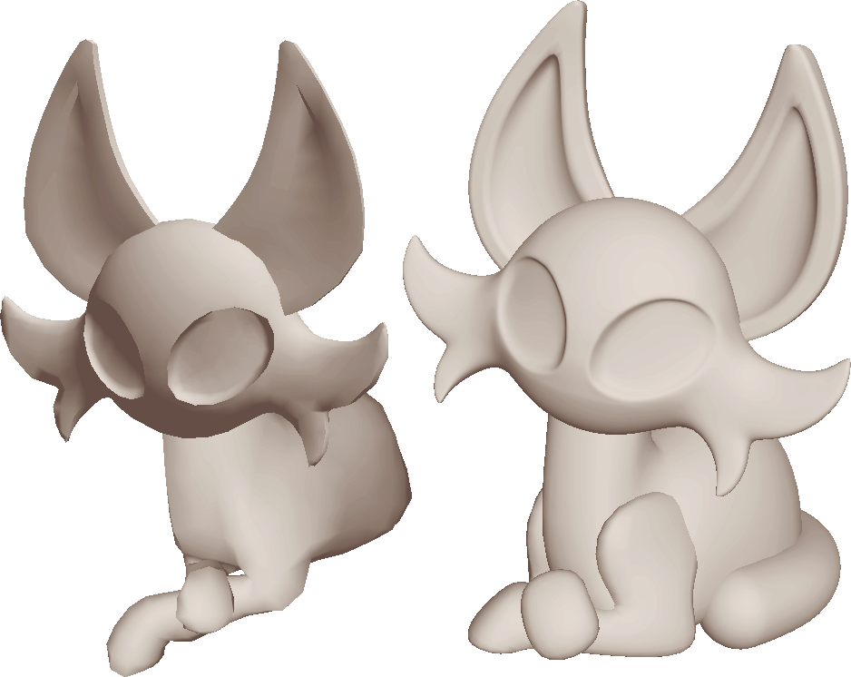
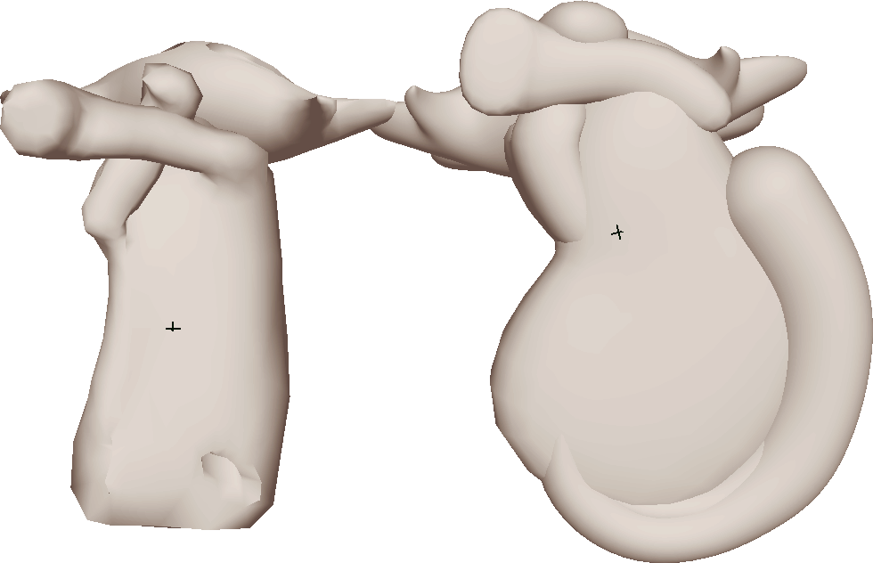

making the figurines

so i'd really wanted to make an interactive figurine for ages, and the opening window seemed like a great contender.
especially if it could be posed in place, and i thought it had cute potential to have paper backdrops tacked to the back as decoration.
especially if it could be posed in place, and i thought it had cute potential to have paper backdrops tacked to the back as decoration.





so in working out what was important to change, i figured everything needed to be chonkier, so it doesnt break,
and smoother, so that less bubbles get caught in the casts.